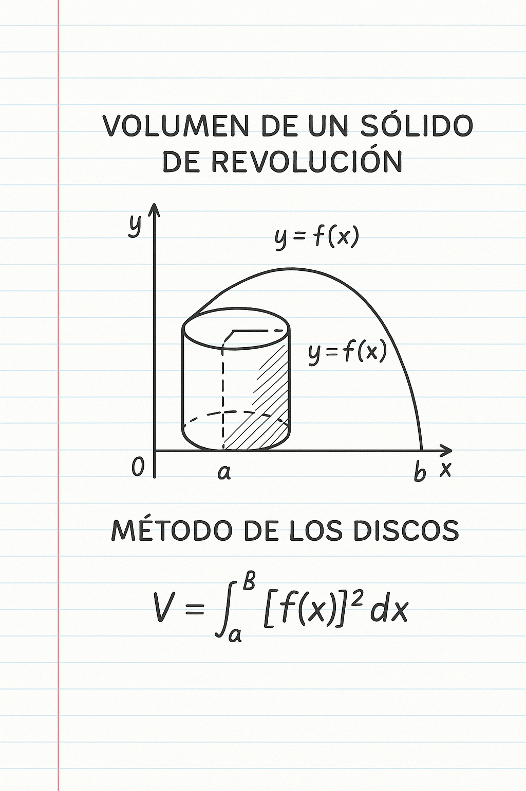
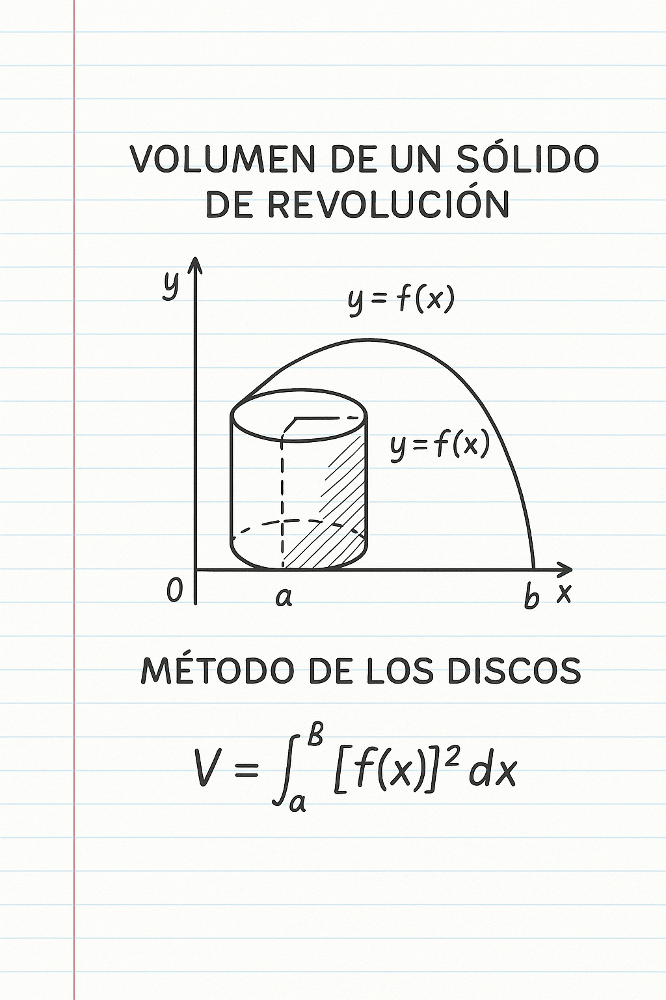

Ejemplos
Ejemplo 1: Volumen de un sólido de revolución (Método de los discos)

Ejemplo 2: Otro método visual de revolución
Visualiza la función $$ y = f(x) $$ girando alrededor del eje X. Observa cómo se forma el sólido.
Este mini curso tiene como objetivo comprender el concepto de los sólidos de revolución, su relación con las integrales definidas y cómo se utilizan para calcular volúmenes tridimensionales generados por la rotación de una región en el plano.
El propósito es que el estudiante desarrolle una comprensión visual y analítica de cómo una figura plana puede generar un cuerpo tridimensional al girar alrededor de un eje, y cómo el cálculo integral permite determinar su volumen con precisión.
Este tema forma parte esencial del estudio de Cálculo II y tiene aplicaciones prácticas en ingeniería, diseño, arquitectura y física, donde frecuentemente se requiere calcular volúmenes o áreas de figuras con simetría rotacional.
Un sólido de revolución es una figura tridimensional obtenida al rotar una región del plano alrededor de un eje fijo, como el eje x o el eje y. Por ejemplo, si una parábola gira alrededor del eje x, se genera un cuerpo con forma de cuenco o paraboloide.
El cálculo integral permite determinar el volumen de estos sólidos sumando los volúmenes de infinitas secciones circulares o cilíndricas muy delgadas. Dependiendo del tipo de rotación y la forma de la región, se utilizan distintos métodos.
Se utiliza cuando la región gira alrededor de un eje y no queda espacio vacío en el centro. Cada disco tiene un radio igual al valor de la función y un grosor infinitesimal dx. La fórmula general es:
$$ V = \pi \int_a^b [f(x)]^2 \, dx $$
Este método se aplica cuando el sólido tiene un hueco interno (por ejemplo, si la región gira alrededor de una línea diferente al eje principal). Se resta el volumen interno del externo:
$$V = \pi \int_a^b ([R(x)]^2 - [r(x)]^2) \, dx$$
Se usa cuando la región gira de manera que resulta más fácil considerar "capas" o "cascarones" delgados en lugar de discos. Este método es útil cuando se rota alrededor del eje y o de una línea vertical.
$$ V = 2\pi \int_a^b x \, f(x) \, dx $$
Los sólidos de revolución se aplican para modelar objetos como tanques, ejes, piezas mecánicas, jarras o copas. Además, ayudan a comprender cómo las herramientas del cálculo se utilizan para describir y analizar formas reales mediante el lenguaje matemático.
Visualiza la función $$ y = f(x) $$ girando alrededor del eje X. Observa cómo se forma el sólido.
En este video se explica paso a paso cómo se aplican los métodos de los discos y cascarones para obtener el volumen de sólidos de revolución.
Universidad Mariano Galvez
Facultad de Ingeniería en Sistemas
Proyecto académico desarrollado para la asignatura de Cálculo II.
Tema: Sólidos en Revolución.
Autor: Kevin Estuardo Rivera Ramos
Carné: 9941-23-25388
Año: 2025
Elaborado por un estudiante de Ingeniería en Sistemas apasionado por las matemáticas, el diseño web y la enseñanza interactiva.
Contacto: kriverar1@miumg.edu.gt